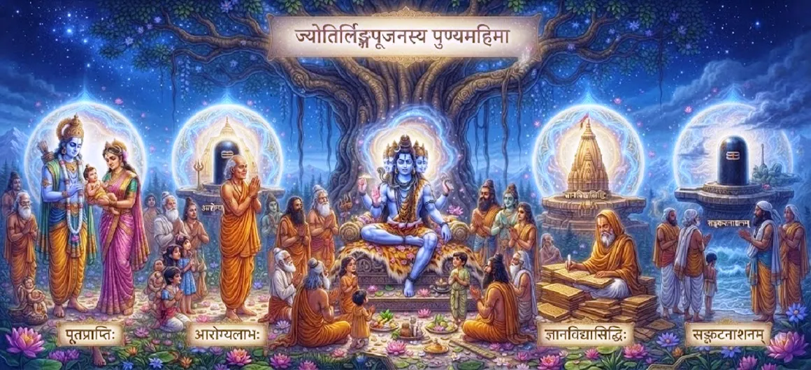

The Merit of Worshipping Jyotirlingas
The twenty-sixth chapter of the Kotirudra Samhita elaborates on the supreme spiritual rewards, liberation of the soul, and divine grace attained by worshipping the twelve sacred Jyotirlingas of Lord Shiva.
Following the principles of sacred pilgrimage, this chapter emphasizes that sincere reverence shown to the pillar of infinite light destroys past sins and grants ultimate peace.
It serves as a glorious testament to the transformative power of devotion directed toward Lord Shiva's radiant manifestations.
Chapter 26 Highlights
Radiant Light
The infinite divine energy embodied in each Jyotirlinga.
Power of Remembrance
The immense merit gained simply by chanting their names.
Karmic Cleansing
Total eradication of past sins and negative tendencies.
Divine Grace
Shiva's protective and liberating shelter for devotees.
Spiritual Elevation
Steadily rising from mortal bondage to divine bliss.
Ultimate Liberation
Achieving moksha through devotion to the cosmic pillar.
Core Topics in This Chapter
- 01The Supreme Nature of Jyotirlingas→
- 02Merit of Remembering the Twelve Names→
- 03Eradication of Major and Minor Sins→
- 04Benefits of Daily Chanting→
- 05Liberation from Samsara→
- 06Union of Devotion and Grace→
- 07Attaining Supreme Peace and Bliss→
- 08Eternal Rewards in Shiva's Abode→
- 09Transformative Power of Worship→
- 10Transition to Chapter 27→
The Supreme Nature of Jyotirlingas
The text explains that the twelve Jyotirlingas are not ordinary stone pillars, but condensed manifestations of infinite, self-luminous divine consciousness.
Worshipping them connects the devotee directly to the source of all creation, preservation, and dissolution.
Merit of Remembering the Twelve Names
Simply reciting or hearing the names of the twelve shrines—Somanatha, Mallikarjuna, Mahakala, Omkareshvara, Kedaranatha, Bhimashankara, Vishvanatha, Triambakeshvara, Vaidyanatha, Nageshvara, Rameshwara, and Ghushmeshvara—grants immense spiritual merit.
It purifies the mind instantly.
Eradication of Major and Minor Sins
The chapter declares that all sins accumulated over lifetimes, whether intentional or accidental, are burned away like dry grass in a fire when one worships the Jyotirlingas with faith.
The power of Lord Shiva's light cleanses even the deepest karmic stains.
Benefits of Daily Chanting
Devotees who recite these twelve holy names every morning and evening remain free from fear, disease, and untimely distress.
They are constantly guarded by the invisible shield of divine grace.
Liberation from Samsara
Through consistent devotion to the Jyotirlingas, the soul transcends the heavy bonds of worldly illusion and escapes the endless cycle of rebirth.
The seeker attains supreme liberation (moksha).
Union of Devotion and Grace
Worship is not merely an outer ritual of offering water and bilva leaves, but an internal surrender of the ego into the flame of divine awareness.
When devotion reaches its peak, Lord Shiva's grace descends effortlessly.
Attaining Supreme Peace and Bliss
The worshipper experiences an unshakable inner peace that remains unaffected by the dualities of pleasure and pain, success and failure.
Divine bliss fills every corner of the purified heart.
Eternal Rewards in Shiva's Abode
Those who remain devoted to the Jyotirlingas throughout their lives ultimately reside in Shivaloka, enjoying eternal companionship with the Lord.
They transcend all mortal sorrows permanently.
Transformative Power of Worship
The chapter emphasizes that even the most fallen or distressed individual becomes pure and exalted simply by turning their heart toward a Jyotirlinga.
Shiva's mercy is boundless and open to all sincere seekers.
Transition to Chapter 27
Having established the supreme merit of worshipping Jyotirlingas, the narrative prepares to explore the broader blessings bestowed by sacred pilgrimage.
Readers are invited to continue to Chapter 27, The Blessings of Sacred Pilgrimage.
Key Teachings of Chapter 26
Infinite Light
Jyotirlingas are living pillars of supreme consciousness.
Chanting Power
Reciting the twelve names purifies instantly.
Karma Destruction
All accumulated sins are burned away by faith.
Constant Shield
Daily remembrance protects against fear and distress.
Moksha Attained
Devotion breaks the cycle of birth and death.
Boundless Grace
Shiva's mercy redeems every sincere worshipper.
Spiritual Reflection
The worship of the twelve Jyotirlingas is not merely an external observance of rituals, but an inner alignment with the infinite pillar of light that upholds the cosmos. When a devotee bows before a Jyotirlinga or remembers its sacred name, they are invoking the primal energy that dissolves all darkness and illusion. This chapter reminds us that no matter how heavy our past burdens or mistakes may seem, the transformative fire of true devotion to Lord Shiva can purify the soul, granting ultimate peace, liberation, and eternal union with the Divine.
Living the Message of Chapter 26
Recite the names of the twelve Jyotirlingas every morning to center your mind and invite divine protection into your day.
Approach your spiritual practices with complete sincerity, knowing that sincere devotion burns away karmic obstacles.
Cultivate inner light and peace so that your presence brings comfort and upliftment to those around you.
Key Spiritual Concepts
The radiant pillar of infinite divine consciousness and light.
The spiritual purity gained by chanting the twelve holy names.
The complete burning away of past sins through faith.
Breaking free from the cycle of worldly birth and death.
The unshakeable inner peace born from divine union.
The unconditional grace of Shiva that saves all sincere souls.
Chapter Summary
Kotirudra Samhita Chapter 26 highlights the supreme spiritual merit of worshipping the twelve Jyotirlingas of Lord Shiva. It details how remembering, chanting, or visiting these radiant shrines eradicates all past karma, protects the devotee from fear, and grants ultimate liberation (moksha). By celebrating the transformative power of devotion and divine light, this chapter prepares the narrative for Chapter 27, which explores the broader blessings of sacred pilgrimage.
Frequently Asked Questions
1. What is the primary focus of Kotirudra Samhita Chapter 26?
Chapter 26 focuses on the immense spiritual rewards, purification of sins, and ultimate liberation (moksha) attained by worshipping the twelve Jyotirlingas of Lord Shiva.
2. What spiritual fruits are gained by remembering the names of the Jyotirlingas?
Simply chanting or remembering the names of the twelve Jyotirlingas destroys past sins, brings mental peace, and invokes Lord Shiva's immediate grace.
3. How does worshipping a Jyotirlinga affect a devotee's karma?
It burns away accumulated karmic debts and breaks the endless cycle of birth and death (samsara).
4. How does this chapter connect to the previous chapter?
While Chapter 25 explored the physical and inner journey of sacred pilgrimage, Chapter 26 explicitly details the exact spiritual merits received from worshipping the Jyotirlingas.
5. What narrative follows this chapter?
The narrative transitions to Chapter 27, 'The Blessings of Sacred Pilgrimage'.
6. What state of mind is essential during Jyotirlinga worship?
Pure devotion, unwavering faith, and surrender to the supreme light of Lord Shiva are essential for true worship.
“The radiant light of the Jyotirlingas burns away every shadow of karma, leading the devoted soul into the eternal bliss of liberation.”
Continue Through Kotirudra Samhita
Chapter 26 explores the merit of worshipping Jyotirlingas. Continue to Chapter 27, The Blessings of Sacred Pilgrimage.